Basisvoorbeeld flybarless heli¶
Een eenvoudige flybarless (FBL) helikopteropstelling, met een controller zoals de Spirit als voorbeeld. In tegenstelling tot een vliegtuig is een helikopter inherent instabiel — de FBL-controller gebruikt gyro's (rotatiesnelheid) en versnellingsmeters (beweging/oriëntatie) om correcties voor yaw/pitch/roll te berekenen via een afgestemde PID-regelkring (Proportional-Integral-Derivative), waarbij stabiliteit, reactiesnelheid en overshoot worden afgewogen op basis van de specifieke fysieke en elektrische eigenschappen van de helikopter.
Deze tutorial behandelt uitsluitend de programmering van de zender — raadpleeg voor de rest de documentatie van uw FBL-unit, en begin er alleen aan met degelijke algemene helikopterkennis.
Danger
Verwijder voor de veiligheid de rotorbladen voordat u begint.
Stap 1. Controleer de systeeminstellingen¶
Kanaalvolgorde AETR, Eerste vier kanalen vast UIT — Spirit FBL-units verwachten de SBUS-kanalen specifiek in deze volgorde (ook al gebruiken ze intern TAER in hun eigen configuratie). Registreer (indien ACCESS) en bind de ontvanger via RF System.
Stap 2. Bepaal de benodigde servo's/kanalen¶
| Functie | Kanaal |
|---|---|
| Rol (rolroer) | — |
| Pitch (hoogteroer) | — |
| Gas | — |
| Yaw (richtingsroer) | — |
| Gyroversterking | 5 |
| Collectieve pitch | 6 |
| Instellingenbank | 7 |
| Rescue | 8 |
Stap 3. Maak een nieuw model aan¶
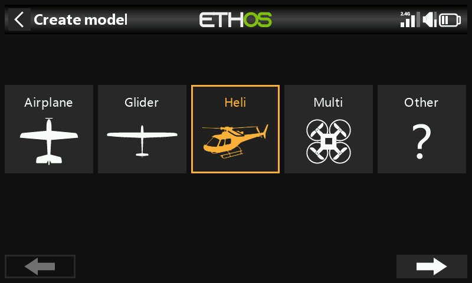
Maak/selecteer vanuit Modelkeuze een categorie Heli, start de wizard en kies Flybarless:
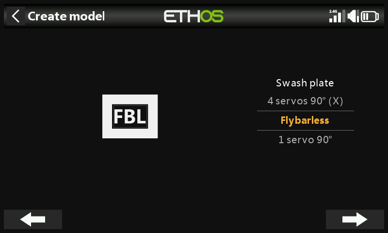
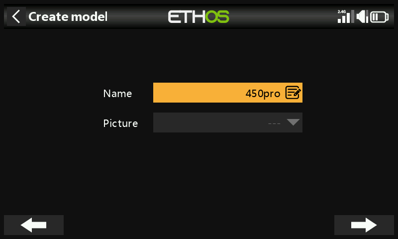
Geef het een naam en kies een afbeelding.
Stap 4. Bekijk en configureer de mixen¶
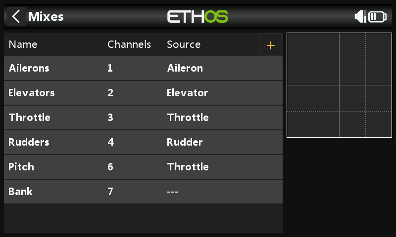
De wizard maakt Rolroeren/Hoogteroeren/Gas/Richtingsroer in AETR-volgorde, Pitch op kanaal 6 en FBL Bank op kanaal 7:
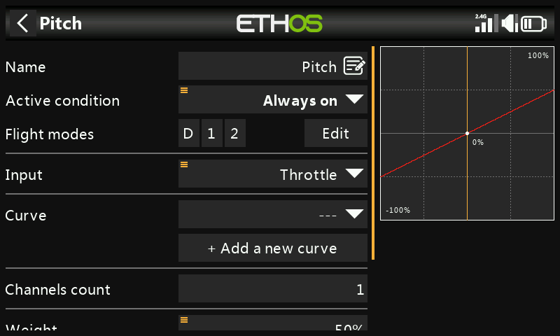
Controleer of kanaal 6 de collectieve pitch is. Voor twee extra kanalen moeten handmatig vrije mixen worden toegevoegd: Gyro Gain (kanaal 5) en Rescue/Stabi (kanaal 8).
Rolroer/hoogteroer/richtingsroer — hier hoeft niets toegevoegd te worden; rates en Expo zijn de taak van de FBL-unit, dus de zender geeft alleen een schone lineaire ingang door.
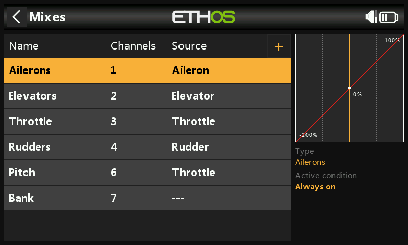
Collectieve pitch — een rechte lineaire curve; controleer alleen het uitgangskanaal (normaal 6). Net als hierboven worden rates/Expo door de FBL-unit verzorgd en niet hier.
FBL Bank — de drie instellingenbanken van de Spirit (verschillende vliegstijlen, sensorversterkingen bij verschillende toerentallen, of Beginner/Acro/3D — of simpelweg afstemmingspresets), toegewezen aan een 3-standenschakelaar, bijv. SE:
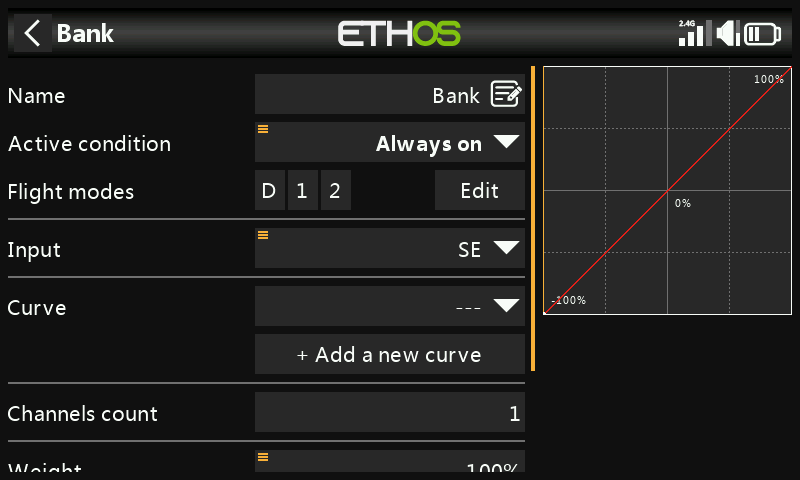
Gyro Gain — voeg toe als vrije mix na het laatste kanaal. De versterking is doorgaans een vaste waarde: stel Bron in op Special Value 0, stel de versterking in via Offset (later tijdens het vliegen fijn af te stemmen) en zet de uitgang op kanaal 5:
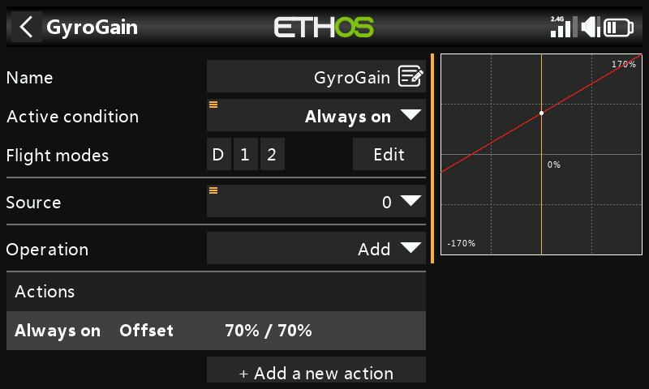
Vluchtmodi configureren¶
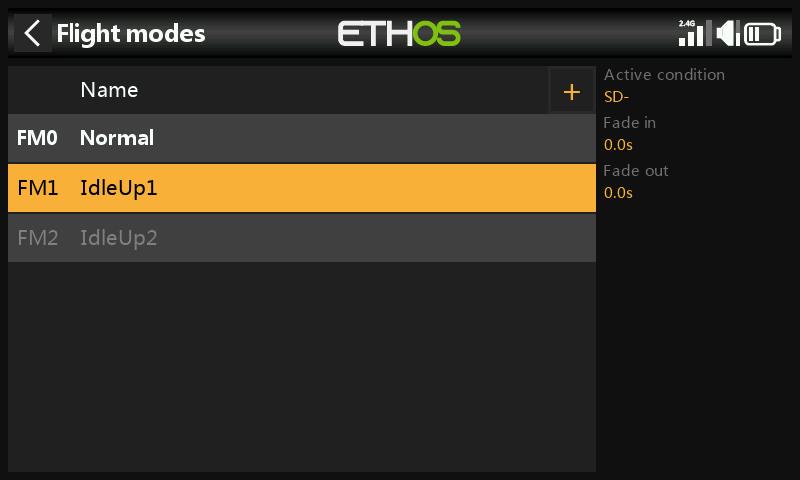
Drie vluchtmodi: geef de standaardmodus de naam Normal en voeg Idle Up 1/Idle Up 2 toe op schakelaar SD.
De gasmix configureren¶
Drie gascurves, één per vluchtmodus, elk een aangepaste curve:
- Normal — opstarten/opstijgen: begint op −100% (motor uit) en loopt gelijkmatig op. Een 7-punts curve met Smooth aan werkt goed; de exacte waarden moeten tijdens het vliegen worden afgestemd.
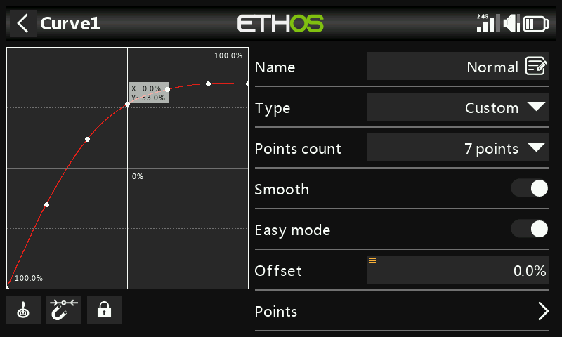
- Idle Up 1 — algemeen vliegen: een rechte curve voor een constante gasinstelling die het rotortoerental stabiel houdt, waarbij de beweging in plaats daarvan uit collectieve pitch, rolroer (roll) en hoogteroer (pitch) komt. Houd de overgang vanaf Normal soepel — geen grote sprong. (De meeste FBL-units bieden ook een Governor-functie om het rotortoerental constant te houden tijdens agressieve manoeuvres — zie de handleiding van de FBL-unit zelf.)
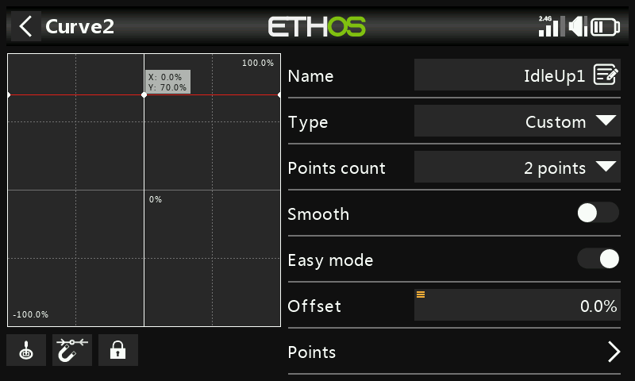
- Idle Up 2 — agressief vliegen (aerobatics, 3D); ook hier tijdens het vliegen afstemmen.
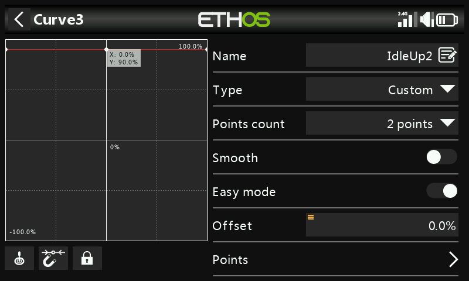
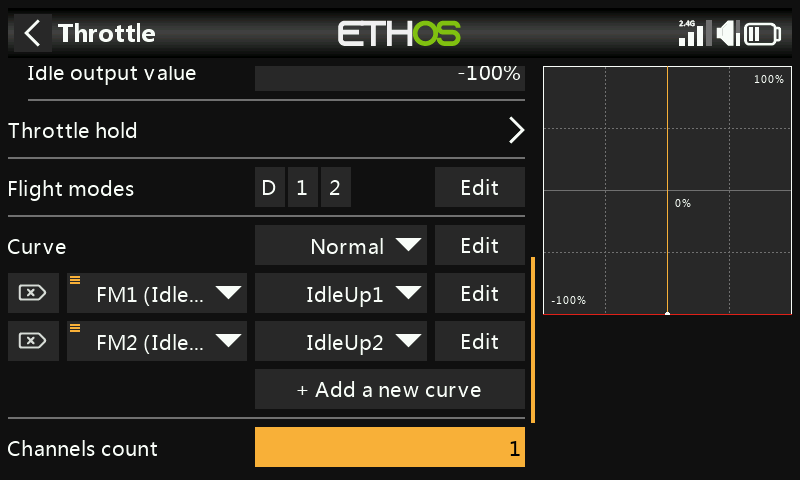
Gas-afsnijding — wijs bijv. schakelaar SG-omhoog toe met Sticky aan: SG omhoog zetten snijdt het gas onmiddellijk af, en (vanwege Sticky) kan het pas weer geactiveerd worden nadat de gasstick eerst terug naar laag/uit is gebracht.
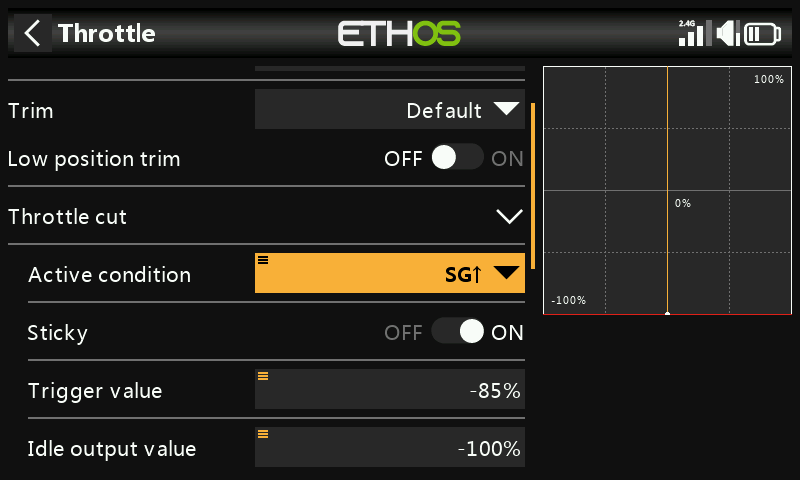
Rescue/Stabi — wijs op vergelijkbare wijze toe, bijv. aan schakelaar SA op kanaal 8.
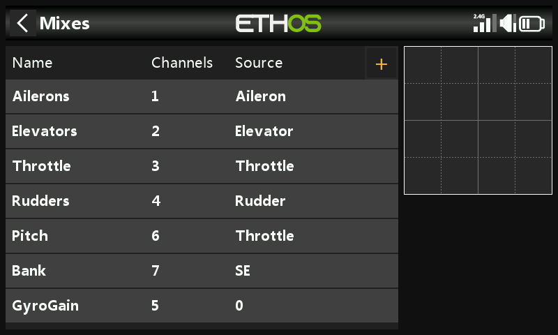
Stap 5. FBL-instellingen¶
- Installeer de FBL-configuratietool — bijv. Spirit Settings, op een pc.
- Sluit de ontvanger aan op de FBL-unit volgens het bijbehorende aansluitschema — doorgaans SBUS Out van de ontvanger naar de RUD-poort van de FBL-unit (sommige Spirit-modellen hebben een SBUS-adapter nodig), of in plaats daarvan via F.Port1/FBUS.
- Sluit de FBL-unit aan op de pc — via kabel of Bluetooth, volgens de handleiding.
!!! danger Sluit nog geen servo's aan.
- Werk indien nodig de FBL-firmware bij, via het tabblad Update van de tool.
- Algemene instellingen (tabblad General van Spirit Settings):
- Ontvangertype: Futaba SBUS of FrSky F.Port, afhankelijk van de situatie, daarna herstarten.
-
Kanaaltoewijzing (met AETR uit de wizard):
Functie Kanaal Gas 1 Rolroer 2 Hoogteroer 3 Richtingsroer 4 Gyro 5 Pitch 6 Bank 7 Rescue/Stabi 8 (Deze toewijzing volgt uit de manier waarop de Spirit-unit de posities in de SBUS-datastroom interpreteert.)
-
Kanaallimieten (tabblad Diagnostic) — de FBL-unit heeft gekalibreerde kanaallimieten van de zender en gecontroleerde middenstanden nodig:
-
Zet eerst alle subtrims en trims op de zender op nul.
- Centreer de collectieve-pitchstick zodat deze exact 1500 µs aangeeft in Uitgangen.
- Zet de FBL-unit onder spanning en controleer of rolroer, hoogteroer, pitch en richtingsroer allemaal 0% aangeven op het tabblad Diagnostic (de FBL-unit detecteert bij elke initialisatie automatisch de neutraalstand).
- Beweeg elke besturing naar de eindstanden en pas de bijbehorende Min/Max in Uitgangen aan tot het tabblad Diagnostic exact +100%/−100% aangeeft; controleer daarbij ook of de richting van de balk overeenkomt met de richting van de stick.
!!! warning Gebruik op deze kanalen nooit subtrim of trim — de Spirit FBL-unit behandelt deze als stuurcommando's, niet als kalibratie.
- Pas de Offset van de Gyro Gain-mix aan om Heading Lock te bereiken.
Hiermee is de zenderzijde volledig geconfigureerd — ga verder met de rest van de instellingen volgens de handleiding van de FBL-unit zelf.